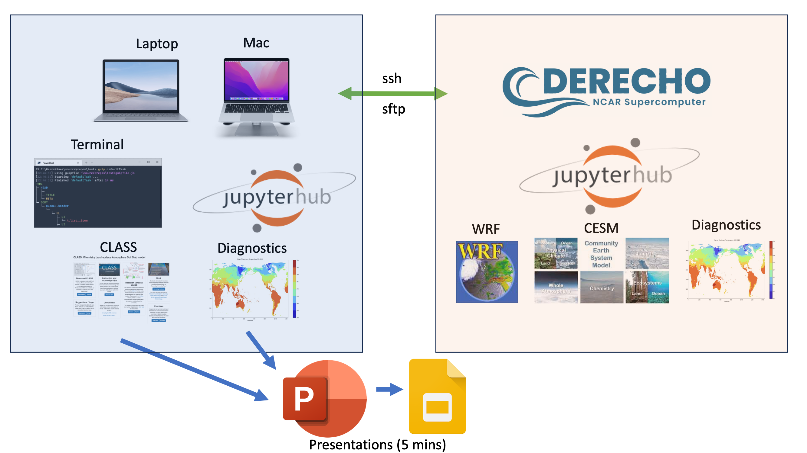

Computing Environments#
Below are details on how to manage your computing environments to best run model simulations and diagnose outputs during the colloquium project time. Specifically, this will include steps for setting up your local (laptop, macbook) environment and running the CLASS simple boundary layer and chemistry model, as well as running the large scale models of WRF and CESM on CISL supercomputer Cheyenne.

General Requirements#
The key components of the project work will involve UNIX based workflows through command line operations. If you are unfamiliar with UNIX commands there are many examples of the most basic commands, such as here and here. This can be part of a Terminal based workflow or a jupyterhub based workflow. Details of the different approaches for your Mac or Windows laptop are given below.
Note
We will be using the UCAR visitor wireless available throughout the Mesa Lab. A one time registration will be valid during the the colloquium period.
Establishing Your Local Computing Environment#
Hopefully each student has a laptop available, that they are familiar with, and has a widely available web browser (Chrome, Firefox, Safari etc.) installed and has including the most recent updates. Given the standardized nature of the jupyterhub web based browser we recommend that students use the jupyterhub server for capability for most activity for your colloquium projects. jupyterhub allows the user to perform command line tasks, file editing, python-based diagnsotic (through python .py code or jupyter notebooks .ipynb code).
Jupyterhub#
If you do not have jupyterhub installed on your laptop, use the conda mechanism to install the relevant packages. If you do not already have the conda package installed go to the conda download page and follow the installation instructions.
This will place minicoda in your $HOME directory and all conda package installation will be located in
/users/$USER/miniconda3/bin on a mac
To make conda commands easy you may want to put the following search path to your.zshrc file in
cd $HOME
export PATH="/Users/$USER/miniconda3/bin:$PATH"
Then use conda to install jupyterhub
conda install -c conda-forge jupyterlab
Then run jupyter-lab in a terminal window
jupyter-lab
The jupyter-lab server should appear as a tab in the closest open browser window or as new browser window.
Terminal#
An alternative approach to conda and jupyter-hub for command line operations and communication to Cheyenne is to use a terminal setup directly and use ssh to connect to cheyenne (this will require DUO login)
ssh –XY [$USER]@cheyenne.ucar.edu
For transfers from cheyenne you can also sftp protocals for a single file or wildcard based copy
sftp [$USER]@cheyenne.ucar.edu:/glade/work/$USER/ASP2023/file_to_copy .
sftp '[$USER]@cheyenne.ucar.edu:/glade/work/$USER/ASP2023/files_to_copy*' .
Warning
The CESM tutorial in the the week prior to the Colloquium had many difficults related to the reliability of [NCAR's jupyter-hub server](https://jupyterhub.hpc.ucar.edu/). So you should be aware of the above just in case we experiene problems
Useful software useful for projects would be a text/file editor e.g., emacs the netcdf file operators nco, a simple netcdf viewer either ncview or panoply and ncl an establshed analysis software for some simple plots. The CESM Tutorial webpage offers a comprehensive outline of software options here.
Establishing Your Supercomputing Environment#
Login Credentials#
Each time you use the jupyterhub server or you choose to connect directly to cheyenne, or you are transfering files from cheyenne to your laptop, you will need to use your login credentials provided by CISL. These should have already been provdied to you. Follow these steps to familiarize yourself with the steps, including authentication through the DUO mobile app You can forgo the need to enter credentials each time by following the steps here, but this is not required. The package is available for mac, windows and linux. For the colloquium only the minicaonda install is required.
Software setup#
We will be running the WRF and CESM simulations on the NCAR supercompter cheyenne. The preferred way to access cheyenne is through jupyterlab on the NCAR jupyterhub server
Follow these steps
Go to jupyterhub.hpc.ucar.edu
Select production
click on start if you are returning to a session
Click on cheyenne login node if you are starting a new session
Your server will take a few seconds to set up
Tip
For easier navigation around your cheyenne workspace in jupyterlab set up symbolic links to your work space (model cases direcories) and scratch space (model output directories).
Unix commands for your home directory
mkdir /glade/work/$USER/ASP2023
mkdir /glade/scratch/$USER/ASP2023
cd $HOME
ln -s /glade/work/$USER/ work
ln -s /glade/scratch/$USER/ scratch
For some code and data we will be using git and github - please make sure it is available and if not download using conda
module load conda
conda install git
Generally the syntax will be
git clone www.github.com/repo-name local-dir
Other software that may required for sessions are a text/file editor e.g., emacs the netcdf file operators nco, a simple netcdf viewer ncview and ncl an establshed analysis software for some simple plots
module load emacs
module load nco
module load ncview
module load ncl
module load openjdk
module load panoply
Note
The CESM tutorial webpage provides a comprehensive setup for your environment (.profile,.tshrc) and a summary description of software that can be utilised during the colloquium.
Depending on your shell results of typing echo $SHELL copy one of the following environemnt setup files
cp /glade/work/rneale/ASP2023/setup/profile ~/.profile (for bash shell)
cp /glade/work/rneale/ASP2023/setup/tcshrc ~/.tcshrc (for tcsh shell)
To activate for this session
source ~/.profile
source ~/.tcshrc
All new sessions activate your environemnt automatically